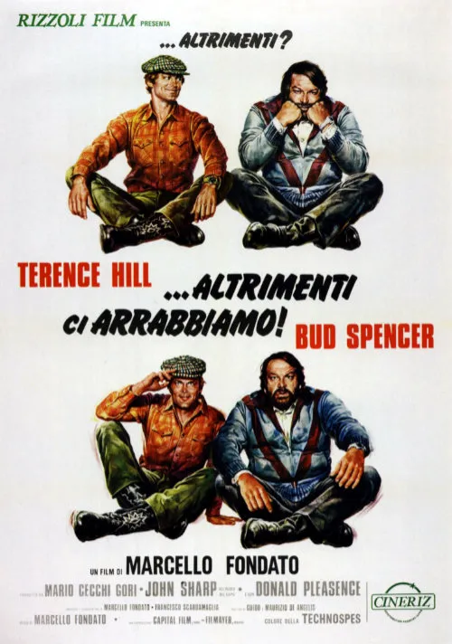

1974 · 14 tracce
Musiche di Guido e Maurizio De Angelis.
Elenco dell’edizione indicata; comprende versioni discografiche e alternative. Non costituisce un elenco certificato di ogni inserto musicale nel montaggio del film.
Gli elenchi documentano le edizioni pubblicate; la presenza di ciascuna traccia nel montaggio del film non è certificata.
Brani e ascolti
- 01
Dune Buggy: Titoli (vocal)
2:53 - 02
…Altrimenti ci Arrabbiamo!, seq. 1 (ball room dance)
2:23 - 03
…Altrimenti ci Arrabbiamo!, seq. 2 (discoteque)
3:15 - 04
…Altrimenti ci Arrabbiamo!, seq. 3 (mariachi dance)
3:51 - 05
Dune Buggy (instrumental)
3:45 - 06
…Altrimenti ci Arrabbiamo!, seq. 4 (beguine)
2:13 - 07
Il Coro Dei Pompieri
2:00 - 08
…Altrimenti ci Arrabbiamo!, seq. 5 (love scene)
3:27 - 09
Across the Fields
4:11 - 10
…Altrimenti ci Arrabbiamo!, seq. 6 (Paganini the killer)
1:36 - 11
…Altrimenti ci Arrabbiamo!, seq. 7 (mariachi dance 2)
2:15 - 12
…Altrimenti ci Arrabbiamo!, seq. 8 (car chase)
1:12 - 13
Il Ballo
3:47 - 14
Dune Buggy: Titoli (off-vocal version)
2:52
Fonti e riferimenti
- Scheda del film e creditiConsultata il 3 ottobre 2026.
- Edizione e lista delle tracceConsultata il 3 ottobre 2026.
- Edizione digitale e ascoltiConsultata il 3 ottobre 2026.
- Locandina — ...altrimenti ci arrabbiamo!Consultata il 3 ottobre 2026.